Slide_3 — Time Series Analysis · Estimating means and covariances · 37 หน้า
บทนี้แสดงสไลด์ Lecture 3 เกือบทุกหน้าตามลำดับ พร้อมคำอธิบายใต้แต่ละหน้า ข้อความที่ไฮไลต์สีเหลืองคือข้อความที่อาจารย์ใส่สีในสไลด์ บทนี้มีสองส่วน ส่วนแรกคือการประมาณ mean, autocovariance และ ACF จากข้อมูลจริง และการอ่าน correlogram ส่วนที่สองคือการกำจัด trend ด้วย detrending และ differencing โจทย์ Shumway problem 1.6 ทั้งสามส่วนมีการพิสูจน์เต็ม และโค้ด R ทุกชุดมีคำอธิบายทีละบรรทัด
บทนี้ยังไม่ได้รวมสิ่งที่อาจารย์พูดในวิดีโอ Class 3 จะเพิ่มภายหลังพร้อมระบุคลิปและเวลา
Shumway & Stoffer สไลด์อ้างหน้า 28–29 (sample estimators), หน้า 40 (problem 1.6), หน้า 57–62 (exploratory data analysis, detrending, differencing, global temperature) อ่านเสริมเรื่อง ACF plot ได้ที่ NIST Handbook: Autocorrelation Plot
| หัวข้อ | เนื้อหา | สไลด์ |
|---|---|---|
| 1 | ทำไมต้องประมาณ: population กับ sample | 2–3 |
| 2 | ตัวประมาณสามตัว | 4–6 |
| 3 | Correlogram และ large sample distribution | 7–9 |
| 4 | In-class example: คำนวณด้วยมือ | 10 |
| 5 | ตัวอย่างใน R และ ADF test | 11–16 |
| 6 | Deterministic trend และ problem 1.6 | 18–21 |
| 7 | Detrending | 22–25 |
| 8 | Example: Global temperature | 26–31 |
| 9 | Differencing | 32–37 |
| 10 | แบบฝึกท้ายบท | — |
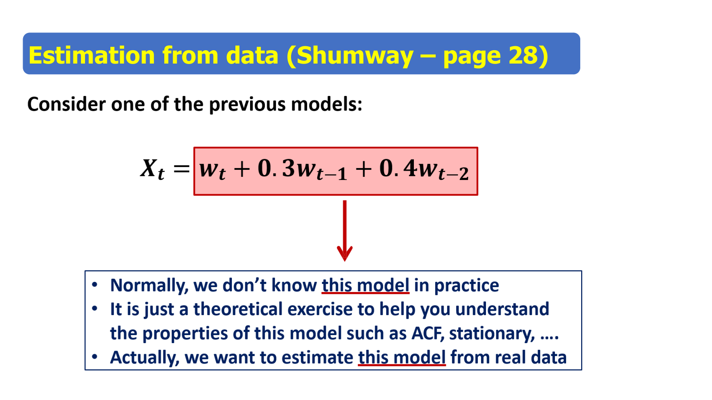
โจทย์ใน Lesson 1 และ 2 เริ่มจากโมเดลที่รู้แล้ว เช่น \(X_t=w_t+0.3w_{t-1}+0.4w_{t-2}\) แล้วคำนวณ ACF สไลด์เตือนว่า โดยปกติไม่รู้ this model ในทางปฏิบัติ การคำนวณเช่นนั้นเป็นแบบฝึกเชิงทฤษฎีเพื่อให้เข้าใจสมบัติของโมเดล เช่น ACF และ stationarity งานจริงคือประมาณ this model จากข้อมูลจริง ในข้อมูลจริงมีเพียงตัวเลขชุดหนึ่ง ไม่มีใครบอกว่าสัมประสิทธิ์คือ 0.3 และ 0.4 ต้องย้อนหาจากข้อมูล เปรียบได้กับการรู้สูตรอาหารแล้วทำอาหาร กับการชิมอาหารแล้วเดาสูตร บทก่อนหน้าทำอย่างแรก บทนี้เริ่มทำอย่างหลัง
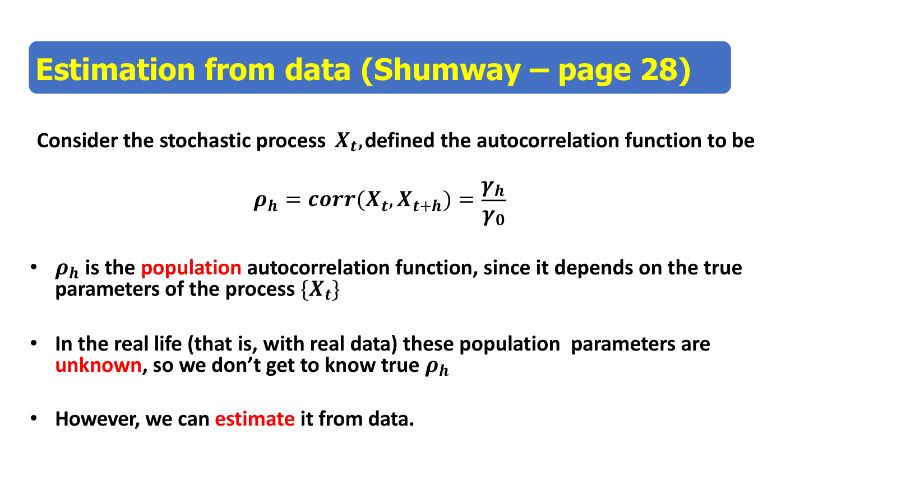
ACF ที่นิยามว่า \(\rho_h=\mathrm{corr}(X_t,X_{t+h})=\gamma_h/\gamma_0\) เป็น population autocorrelation function เพราะขึ้นกับพารามิเตอร์จริงของ process ในข้อมูลจริง พารามิเตอร์เหล่านี้ unknown จึงไม่รู้ค่า \(\rho_h\) ที่แท้จริง แต่ estimate จากข้อมูลได้
| Population | Sample | |
|---|---|---|
| คืออะไร | ค่าจริงของ process ซึ่งมองไม่เห็น | ค่าที่คำนวณจากข้อมูลที่มี |
| สัญลักษณ์ | \(\mu,\ \gamma(h),\ \rho(h)\) | \(\bar X,\ \hat\gamma(h),\ \hat\rho(h)\) |
| เปลี่ยนตามชุดข้อมูลหรือไม่ | ไม่ | เปลี่ยน |
เครื่องหมายหมวกเหนือสัญลักษณ์หมายถึงค่าประมาณ
ตัวประมาณทั้งสามใช้ได้เมื่อ process เป็น weakly stationary เหตุผลคือ ถ้า \(\mu_t\) เปลี่ยนทุกเวลา แต่ละเวลามีข้อมูลเพียงค่าเดียว จึงประมาณค่าเฉลี่ยของแต่ละเวลาไม่ได้ แต่ถ้า stationary ค่าเฉลี่ยเท่ากันทุกเวลา จึงนำทุกจุดมาเฉลี่ยรวมกันได้ เหตุผลเดียวกันใช้กับ covariance: คู่ของค่าที่ห่างกัน h ช่วงเวลาทุกคู่มี covariance เดียวกัน จึงนำมาเฉลี่ยรวมกันได้
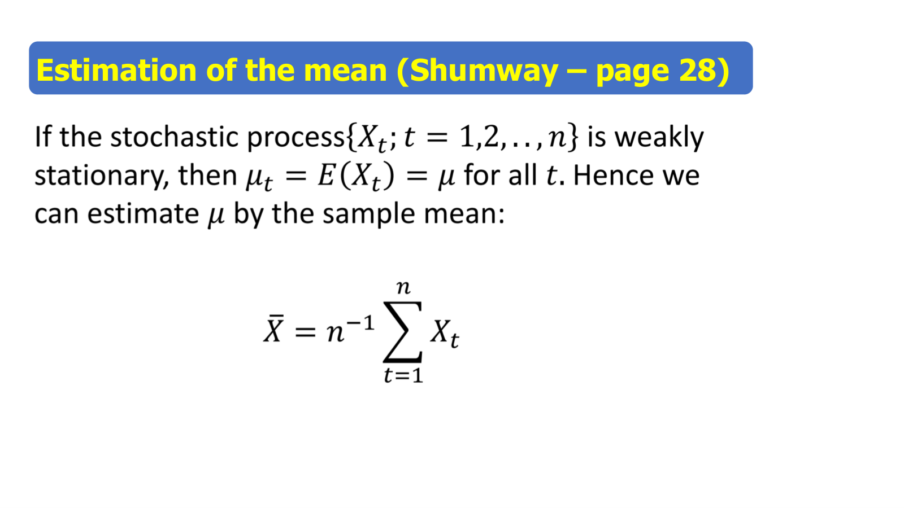
ถ้า process เป็น weakly stationary ค่าเฉลี่ย \(\mu\) ประมาณด้วย sample mean: \(\bar X=n^{-1}\sum_{t=1}^{n}X_t\) คือผลรวมของทุกค่าหารด้วยจำนวนค่า เป็นค่าเฉลี่ยเลขคณิตตามปกติ
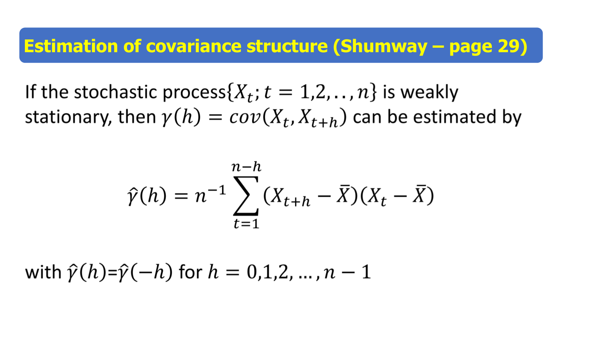
Sample autocovariance function คือ \(\hat\gamma(h)=n^{-1}\sum_{t=1}^{n-h}(X_{t+h}-\bar X)(X_t-\bar X)\) โดย \(\hat\gamma(h)=\hat\gamma(-h)\) สำหรับ \(h=0,1,\dots,n-1\) วิธีคำนวณมีสามขั้น ขั้นแรกลบค่าเฉลี่ยออกจากทุกค่า ขั้นที่สองจับคู่ค่าที่ห่างกัน h ช่วงเวลาแล้วคูณกัน ขั้นที่สามรวมผลคูณแล้วหารด้วย n มีสองจุดที่ต้องสังเกต ผลรวมมีเพียง \(n-h\) พจน์ เพราะคู่ที่ห่างกัน h มีจำนวนเท่านั้น แต่ตัวหารเป็น n เสมอ ไม่ใช่ \(n-h\) และเมื่อ \(h=0\) สูตรนี้ให้ sample variance
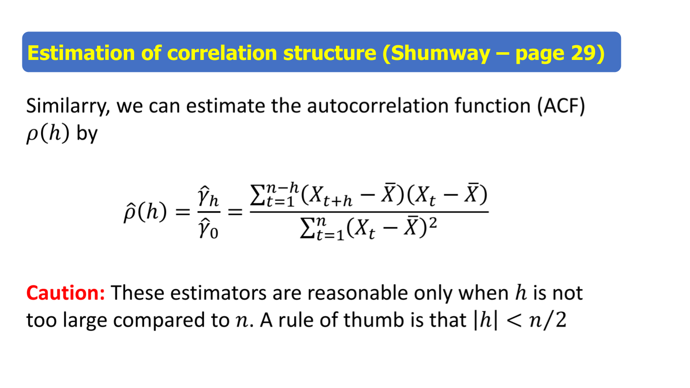
Sample autocorrelation function คือ \(\hat\rho(h)=\hat\gamma_h/\hat\gamma_0\) ตัว \(n^{-1}\) ในเศษและส่วนตัดกัน จึงเขียนเป็นผลรวมหารผลรวมได้: \(\hat\rho(h)=\dfrac{\sum_{t=1}^{n-h}(X_{t+h}-\bar X)(X_t-\bar X)}{\sum_{t=1}^{n}(X_t-\bar X)^2}\) สไลด์ให้ข้อควรระวัง: ตัวประมาณเหล่านี้ใช้ได้เมื่อ h ไม่ใหญ่เมื่อเทียบกับ n กฎโดยประมาณคือ \(|h|<n/2\) เพราะเมื่อ h ใหญ่ จำนวนคู่ที่ใช้คำนวณเหลือน้อย เช่น ที่ \(h=n-1\) เหลือเพียงคู่เดียว ค่าที่ได้จึงไม่น่าเชื่อถือ
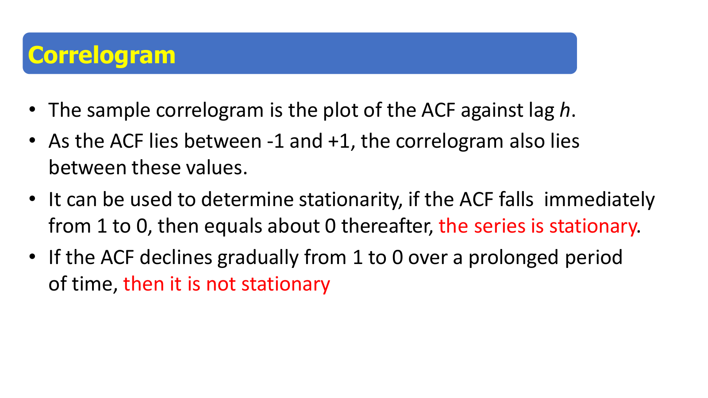
Sample correlogram คือกราฟของ ACF เทียบกับ lag h เนื่องจาก ACF อยู่ระหว่าง −1 ถึง 1 correlogram จึงอยู่ในช่วงเดียวกัน Correlogram ใช้ตรวจ stationarity ได้: ถ้า ACF ลดจาก 1 เป็น 0 ทันที แล้วเท่ากับประมาณ 0 หลังจากนั้น the series is stationary ถ้า ACF ลดลงทีละน้อยจาก 1 เป็น 0 ในช่วงเวลายาว then it is not stationary เหตุผลของข้อหลัง: ข้อมูลที่มี trend มีค่าใกล้เคียงกันในช่วงเวลาที่อยู่ใกล้กัน ไม่ว่าห่างกัน 1 หรือ 10 ช่วง ความสัมพันธ์จึงสูงต่อเนื่องหลาย lag
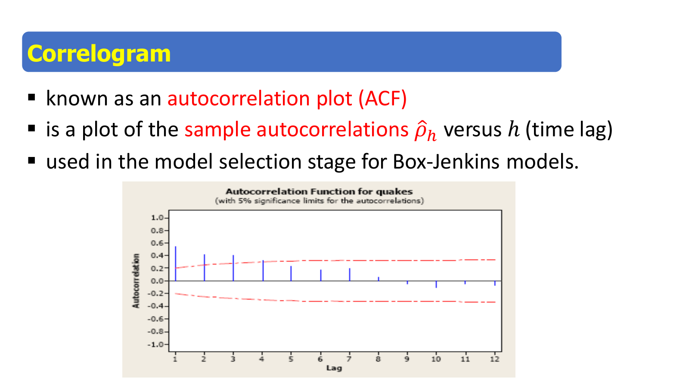
Correlogram รู้จักในอีกชื่อว่า autocorrelation plot (ACF) เป็นกราฟของ sample autocorrelations \(\hat\rho_h\) เทียบกับ h และใช้ในขั้น model selection ของ Box-Jenkins models ตัวอย่างในสไลด์เป็นข้อมูลแผ่นดินไหว: ACF ที่ lag 1 ประมาณ 0.55, lag 2 ประมาณ 0.42, lag 3 ประมาณ 0.41, lag 4 ประมาณ 0.33, lag 5 ประมาณ 0.23 และลดลงจนติดลบเล็กน้อยช่วง lag 9 ถึง 12 ขอบ 5% significance limits เริ่มที่ประมาณ ±0.2 ค่าที่ lag 1 ถึง 3 เกินขอบ จึงมี autocorrelation อย่างมีนัยสำคัญ ส่วนตั้งแต่ lag 5 อยู่ภายในขอบ ค่าที่ลดลงทีละระดับแทนการตกเป็น 0 ทันที แสดงว่าค่าที่อยู่ใกล้กันสัมพันธ์กันยาวหลายช่วงเวลา
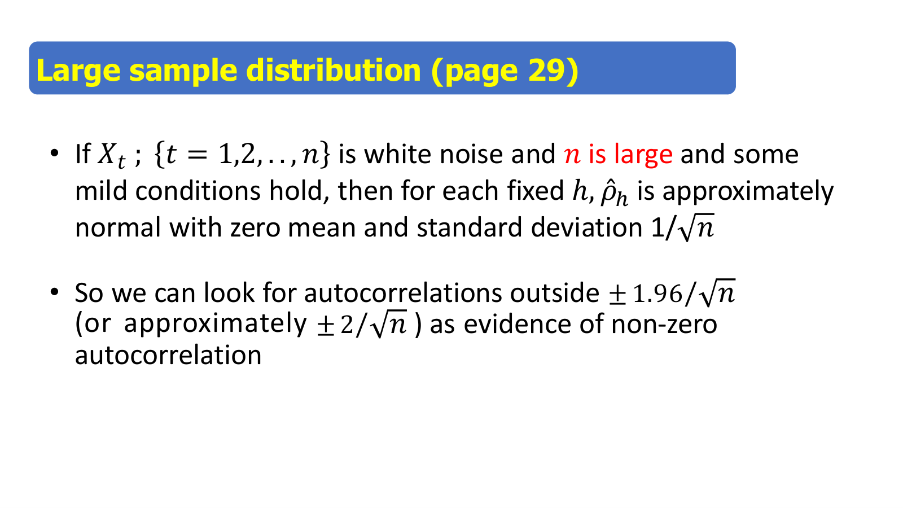
ถ้า \(X_t\) เป็น white noise และ n is large พร้อมเงื่อนไขเบื้องต้นบางข้อ แล้วสำหรับ h แต่ละค่า \(\hat\rho_h\) มีการแจกแจงประมาณปกติ ที่มีค่าเฉลี่ยศูนย์และส่วนเบี่ยงเบนมาตรฐาน \(1/\sqrt n\) จึงมองหา autocorrelation ที่อยู่นอก \(\pm1.96/\sqrt n\) หรือประมาณ \(\pm2/\sqrt n\) เป็นหลักฐานของ autocorrelation ที่ไม่เป็นศูนย์ ที่มาของเส้นประคือข้อนี้: แม้ข้อมูลไม่มี autocorrelation จริง ค่า \(\hat\rho\) ที่คำนวณจากตัวอย่างก็ไม่เป็น 0 พอดี เพราะความบังเอิญของการสุ่ม ขอบนี้บอกว่าความบังเอิญทำให้ค่าเบี่ยงจาก 0 ได้เพียงใดใน 95% ของกรณี
| n | \(1.96/\sqrt n\) | ที่มาของ n |
|---|---|---|
| 100 | \(1.96/10=0.196\) | white noise ในหน้า 12 |
| 98 | \(1.96/9.90=0.198\) | global temperature ปี 1900 ถึง 1997 |
| 5 | \(1.96/2.236=0.877\) | in-class example |
ค่า 1.96 มาจากการแจกแจงปกติมาตรฐาน ซึ่ง 95% ของค่าอยู่ภายใน ±1.96 เท่าของส่วนเบี่ยงเบนมาตรฐาน เมื่อ n น้อย ขอบจะกว้างมาก จึงสรุปได้ยาก และเมื่อดูหลาย lag พร้อมกัน เช่น 20 lag คาดว่าประมาณ 1 แท่งจะเกินหรือแตะขอบโดยบังเอิญ เพราะ 5% ของ 20 คือ 1
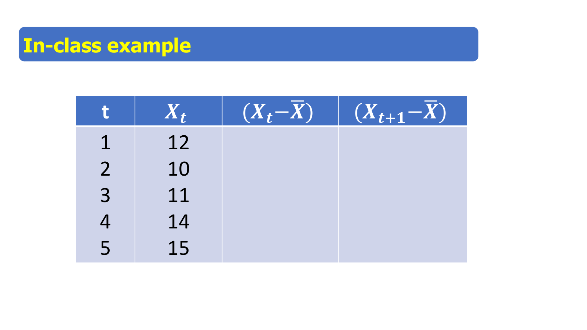
ข้อมูลมี 5 จุด คือ 12, 10, 11, 14, 15 และตารางเว้นสองคอลัมน์ให้เติม คือ \((X_t-\bar X)\) และ \((X_{t+1}-\bar X)\) คอลัมน์ที่สองคือคอลัมน์แรกที่เลื่อนขึ้นหนึ่งแถว ซึ่งเป็นการจับคู่ค่าที่ห่างกันหนึ่งช่วงเวลา
\(\bar X=(12+10+11+14+15)/5=62/5=12.4\)
| t | \(X_t\) | \(X_t-\bar X\) | \(X_{t+1}-\bar X\) | ผลคูณ | \((X_t-\bar X)^2\) |
|---|---|---|---|---|---|
| 1 | 12 | −0.4 | −2.4 | 0.96 | 0.16 |
| 2 | 10 | −2.4 | −1.4 | 3.36 | 5.76 |
| 3 | 11 | −1.4 | 1.6 | −2.24 | 1.96 |
| 4 | 14 | 1.6 | 2.6 | 4.16 | 2.56 |
| 5 | 15 | 2.6 | ไม่มี \(X_6\) | 6.76 | |
| รวม | 0 | 6.24 | 17.2 |
ผลรวมของคอลัมน์ \(X_t-\bar X\) ต้องเป็น 0 เสมอ ใช้ตรวจการคำนวณ
\(17.2/5=3.44\)
\(6.24/5=1.248\) ผลรวมมี 4 พจน์ แต่หารด้วย n = 5
\(1.248/3.44=0.363\) หรือ \(6.24/17.2\) ได้ค่าเดียวกัน
คู่ที่ห่างกันสองช่วง: \((-0.4)(-1.4)+(-2.4)(1.6)+(-1.4)(2.6)=0.56-3.84-3.64=-6.92\) จึงได้ \(\hat\rho(2)=-6.92/17.2=-0.402\)
ค่าที่อยู่ติดกันไปทางเดียวกันระดับปานกลาง และค่าที่ห่างกันสองช่วงไปคนละทาง แต่ n = 5 น้อยมาก ขอบนัยสำคัญคือ ±0.877 ทั้งสองค่าจึงยังไม่มีนัยสำคัญ
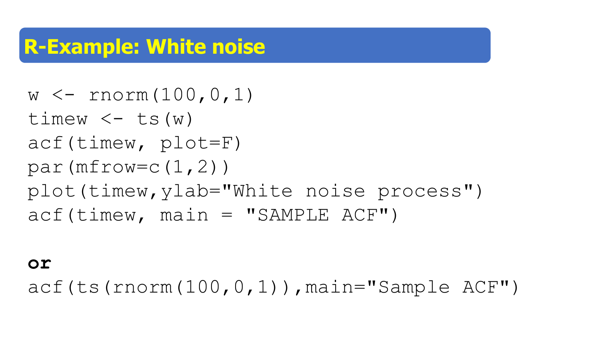
โค้ดหน้านี้สร้าง white noise 100 ค่า แล้วดู ACF ทั้งเป็นตัวเลขและเป็นกราฟ
w <- rnorm(100,0,1)
timew <- ts(w)
acf(timew, plot=F)
par(mfrow=c(1,2))
plot(timew,ylab="White noise process")
acf(timew, main = "SAMPLE ACF")
acf(ts(rnorm(100,0,1)),main="Sample ACF")| โค้ด | ทำอะไร |
|---|---|
| rnorm(100,0,1) | สุ่ม 100 ค่าจากการแจกแจงปกติที่มีค่าเฉลี่ย 0 และส่วนเบี่ยงเบนมาตรฐาน 1 คือ Gaussian white noise ที่ \(\sigma_w^2=1\) |
| ts(w) | แปลงเป็น time series |
| acf(timew, plot=F) | คำนวณ \(\hat\rho(h)\) แล้วพิมพ์เป็นตัวเลข ไม่วาดกราฟ |
| par(mfrow=c(1,2)) | แบ่งหน้ากราฟเป็น 1 แถว 2 คอลัมน์ |
| plot(timew, ylab=...) | วาดข้อมูลตามเวลา |
| acf(timew, main = "SAMPLE ACF") | วาด correlogram พร้อมเส้นประของขอบนัยสำคัญ |
| acf(ts(rnorm(100,0,1)), ...) | ทำทุกขั้นในบรรทัดเดียว สไลด์เชื่อมสองแบบด้วยคำว่า or |
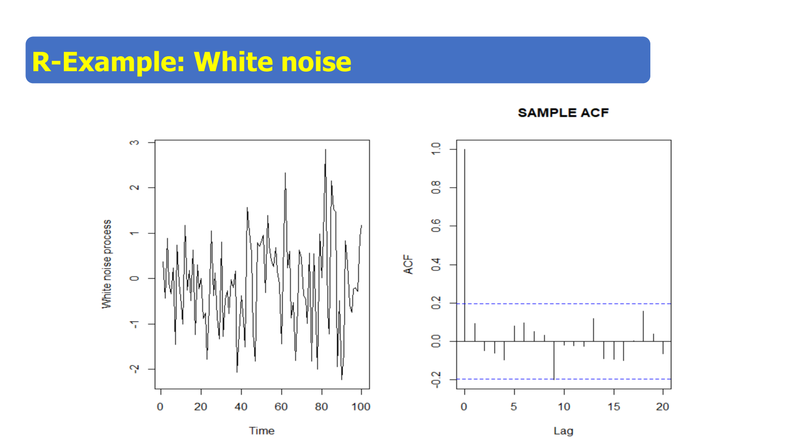
ข้อมูล 100 จุดแกว่งระหว่างประมาณ −2.2 ถึง 2.9 รอบ 0 ใน sample ACF แท่งที่ lag 0 เท่ากับ 1 และตั้งแต่ lag 1 ถึง 20 ทุกแท่งอยู่ระหว่างประมาณ −0.2 ถึง 0.16 เส้นประอยู่ที่ ±0.2 ตรงกับ \(1.96/\sqrt{100}\) แท่งที่ lag 9 เกือบถึง −0.2 ซึ่งเป็นไปตามที่คาดเมื่อดู 20 lag ACF เข้าขอบทันทีหลัง lag 0 ตรงกับทฤษฎีของ white noise ที่ \(\rho(h)=0\) ทุก \(h\ne0\)
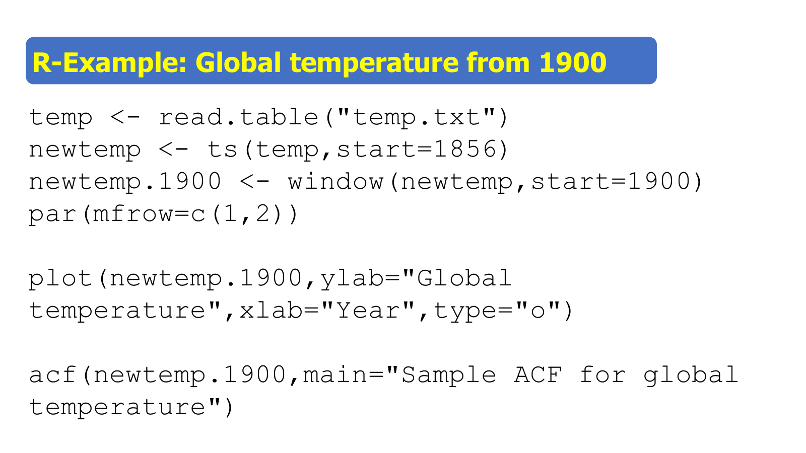
โค้ดหน้านี้ทำขั้นตอนเดียวกันกับข้อมูลจริง คืออุณหภูมิโลกตั้งแต่ปี 1900
temp <- read.table("temp.txt")
newtemp <- ts(temp,start=1856)
newtemp.1900 <- window(newtemp,start=1900)
par(mfrow=c(1,2))
plot(newtemp.1900,ylab="Global temperature",xlab="Year",type="o")
acf(newtemp.1900,main="Sample ACF for global temperature")| โค้ด | ทำอะไร |
|---|---|
| ts(temp,start=1856) | กำหนดให้ค่าแรกตรงกับปี 1856 ข้อมูลเป็นรายปี |
| window(newtemp,start=1900) | ตัดเฉพาะปี 1900 เป็นต้นไป |
| plot(..., type="o") | วาดทั้งจุดและเส้น |
| acf(newtemp.1900, ...) | วาด correlogram ของช่วงปี 1900 ถึง 1997 |
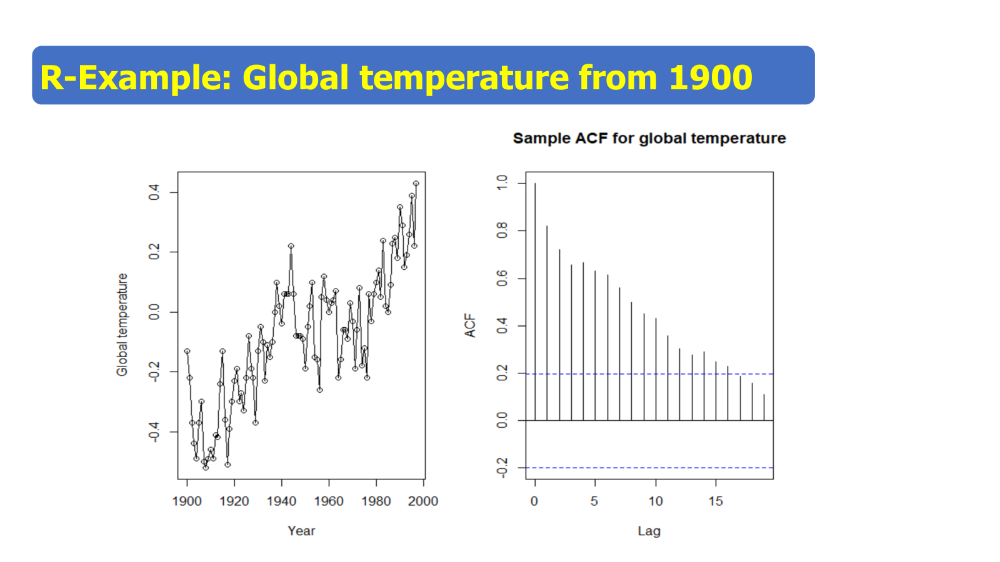
อุณหภูมิเพิ่มจากประมาณ −0.5 ในปี 1910 เป็นประมาณ 0.43 ในปี 1997 ค่า ACF ที่ lag 1 ประมาณ 0.82, lag 2 ประมาณ 0.72, lag 5 ประมาณ 0.63, lag 10 ประมาณ 0.43 และ lag 15 ประมาณ 0.25 ยังเกินขอบ 0.2 จนถึงประมาณ lag 16 นี่คือรูปทรงที่ลดลงทีละน้อยในช่วงยาว จึงไม่ stationary เมื่อเทียบกับ white noise ในหน้า 12 ซึ่งเข้าขอบทันที ความต่างชัดเจน
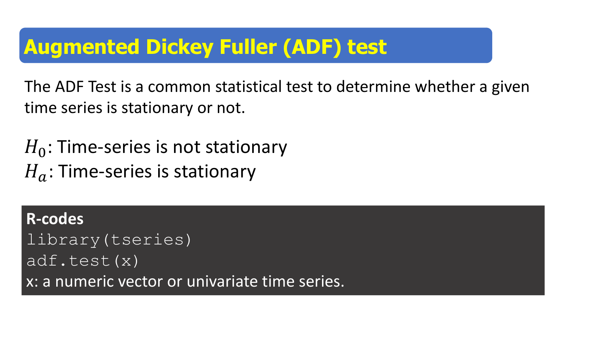
ADF test เป็นการทดสอบทางสถิติที่ใช้ทั่วไปเพื่อตัดสินว่า time series เป็น stationary หรือไม่ สมมติฐานคือ \(H_0\): time series ไม่ stationary และ \(H_a\): time series stationary ใน R ใช้ library(tseries) แล้วเรียก adf.test(x) โดย x เป็นเวกเตอร์ตัวเลขหรือ univariate time series การอ่าน correlogram เป็นการตัดสินด้วยสายตา ADF test ให้การตัดสินด้วยตัวเลข
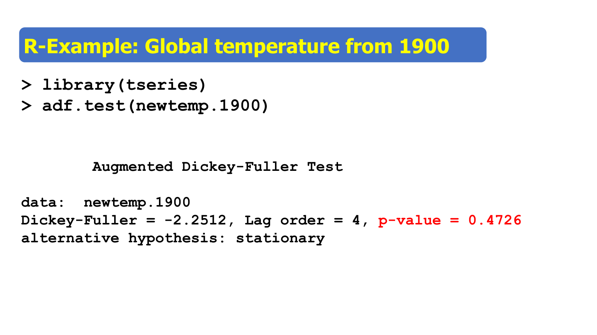
ผลของการทดสอบกับข้อมูลอุณหภูมิตั้งแต่ปี 1900 มีค่าสถิติ Dickey-Fuller เท่ากับ −2.2512 ที่ Lag order 4 และ p-value เท่ากับ 0.4726 ค่าที่ใช้ตัดสินคือ p-value
> library(tseries)
> adf.test(newtemp.1900)
Augmented Dickey-Fuller Test
data: newtemp.1900
Dickey-Fuller = -2.2512, Lag order = 4, p-value = 0.4726
alternative hypothesis: stationaryp-value = 0.4726
0.4726 มากกว่า 0.05 จึงไม่ปฏิเสธ \(H_0\)
ไม่มีหลักฐานเพียงพอว่า stationary จึงสรุปว่า global temperature ไม่ stationary ตรงกับ correlogram ในหน้า 14
| p-value | การตัดสิน | ข้อสรุป |
|---|---|---|
| น้อยกว่า 0.05 | ปฏิเสธ \(H_0\) | stationary |
| ตั้งแต่ 0.05 ขึ้นไป | ไม่ปฏิเสธ \(H_0\) | ไม่ stationary |
ทิศของการทดสอบนี้ต้องระวัง: \(H_0\) คือไม่ stationary p-value ที่ต่ำจึงหมายถึง stationary บรรทัด alternative hypothesis: stationary ในผลลัพธ์ช่วยเตือน ค่า Dickey-Fuller ที่ติดลบมากสนับสนุน stationary เทียบได้กับ −6.128 และ −2.0251 ใน Lesson 2 หน้า 21
rnorm, ts, window, acf, adf.testครึ่งหลังของบทตอบคำถามว่า เมื่อข้อมูลไม่ stationary เพราะมี trend จะทำอย่างไร
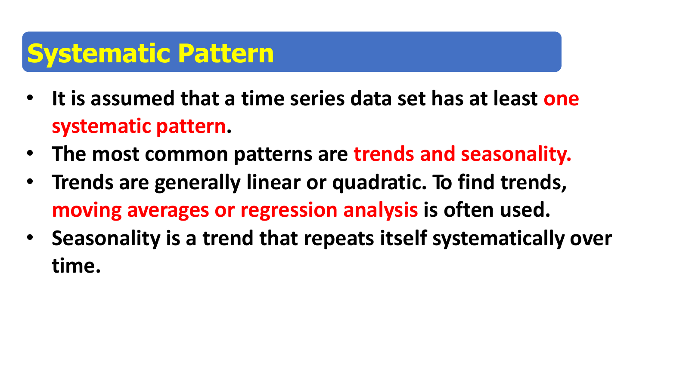
สมมติว่า time series มี one systematic pattern อย่างน้อยหนึ่งแบบ แบบที่พบบ่อยที่สุดคือ trends and seasonality. Trend โดยทั่วไปเป็น linear หรือ quadratic และการหา trend มักใช้ moving averages or regression analysis ส่วน seasonality คือ trend ที่ซ้ำอย่างเป็นระบบตามเวลา คำว่า deterministic trend หมายถึง trend ที่เป็นฟังก์ชันที่แน่นอนของเวลา เช่น เส้นตรง \(\beta_1+\beta_2t\) ไม่มีส่วนสุ่มอยู่ในตัว trend
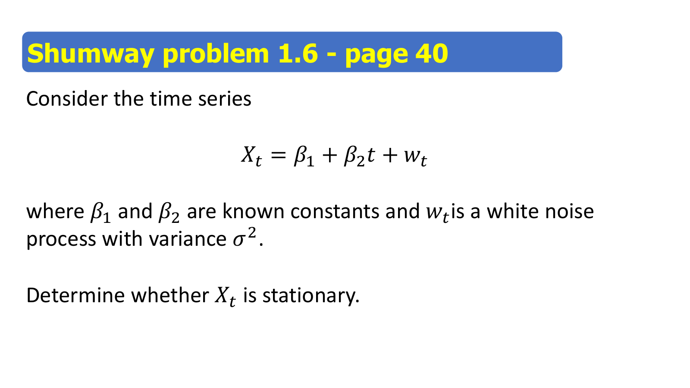
โจทย์พิจารณา \(X_t=\beta_1+\beta_2t+w_t\) โดย \(\beta_1\) และ \(\beta_2\) เป็นค่าคงที่ที่รู้ค่า และ \(w_t\) เป็น white noise ที่มีความแปรปรวน \(\sigma^2\) ให้ตัดสินว่า \(X_t\) stationary หรือไม่ โมเดลนี้คือเส้นตรงที่มี noise บวกเข้าไป
\(E(X_t)=\beta_1+\beta_2t+E(w_t)=\beta_1+\beta_2t\)
ค่าเฉลี่ยมี t อยู่ เมื่อ \(\beta_2\ne0\) จึงขึ้นกับเวลา
ค่าคงที่ไม่มีผลต่อ covariance: \(\mathrm{cov}(X_t,X_{t+h})=\mathrm{cov}(w_t,w_{t+h})\) เท่ากับ \(\sigma^2\) เมื่อ \(h=0\) และ 0 เมื่อ \(h\ne0\) ส่วนนี้ขึ้นกับ h เท่านั้น แต่ไม่ช่วย เพราะไม่ผ่านข้อแรกแล้ว
ตัวอย่างตัวเลข: \(\beta_1=10\), \(\beta_2=2\) ได้ \(E(X_1)=12\) และ \(E(X_{50})=110\) ค่าเฉลี่ยต่างกันชัดเจน เนื่องจากปัญหาอยู่ที่ mean อย่างเดียว ถ้ากำจัด trend ออกได้ ส่วนที่เหลือจะ stationary
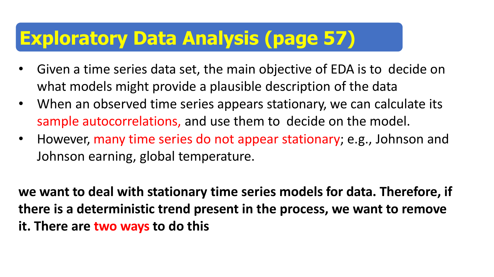
เมื่อได้ข้อมูล time series วัตถุประสงค์หลักของ EDA คือตัดสินว่าโมเดลใดอธิบายข้อมูลได้อย่างสมเหตุสมผล เมื่อข้อมูลดู stationary คำนวณ sample autocorrelations, แล้วใช้เลือกโมเดลได้ แต่ many time series do not appear stationary เช่น Johnson and Johnson earning และ global temperature เนื่องจากต้องการใช้โมเดล stationary ถ้ามี deterministic trend จึงต้องนำออก ซึ่งทำได้ two ways
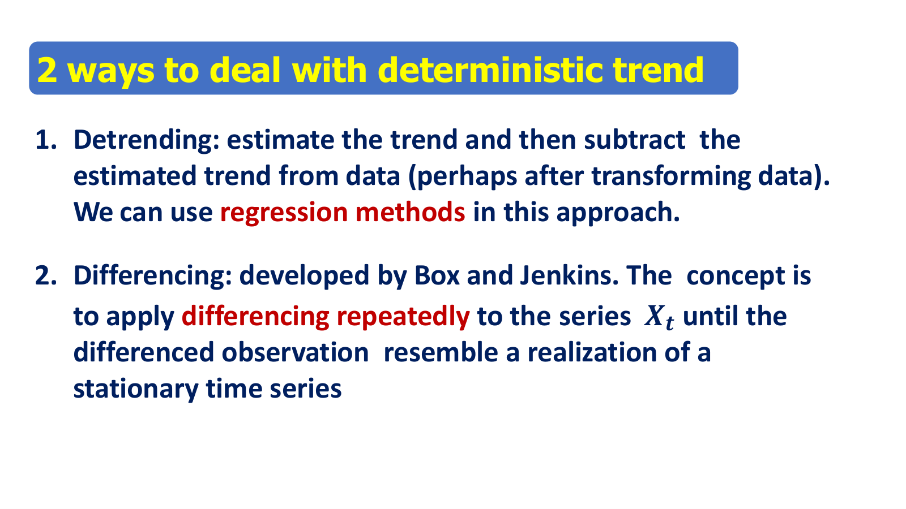
วิธีแรก 1. Detrending: estimate the trend and then subtract the estimated trend from data (perhaps after transforming data). We can use regression methods in this approach. วิธีที่สอง 2. Differencing: developed by Box and Jenkins. The concept is to apply differencing repeatedly to the series X_t until the differenced observation resemble a realization of a stationary time series เปรียบเทียบได้กับการกำจัดความลาดเอียงของถนนออกจากข้อมูลความสูง Detrending วัดความลาดเอียงก่อนแล้วลบออก ส่วน differencing ดูเฉพาะความต่างระหว่างก้าวที่ติดกัน โดยไม่ต้องรู้ว่าความลาดเอียงเป็นเท่าใด
| Detrending | Differencing | |
|---|---|---|
| แนวคิด | ประมาณ trend แล้วลบออก | ลบค่าก่อนหน้าออกจากค่าปัจจุบัน |
| เครื่องมือ | regression | \(\nabla X_t=X_t-X_{t-1}\) |
| ผู้พัฒนาแนวทาง | Box และ Jenkins | |
| อธิบายที่ | หัวข้อ 7 และ 8 | หัวข้อ 9 |
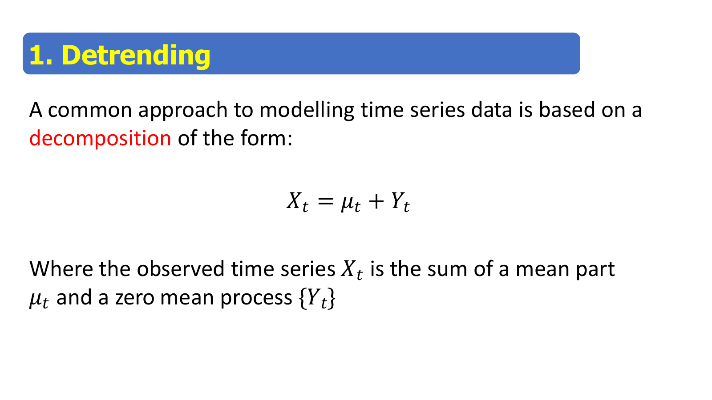
แนวทางที่ใช้ทั่วไปอิง decomposition ในรูป \(X_t=\mu_t+Y_t\) โดย time series ที่สังเกตได้เป็นผลรวมของส่วน mean \(\mu_t\) และ process \(\{Y_t\}\) ที่มีค่าเฉลี่ยศูนย์ รูปนี้ตรงกับ signal บวก noise ใน Lesson 1 โดย \(\mu_t\) คือ signal
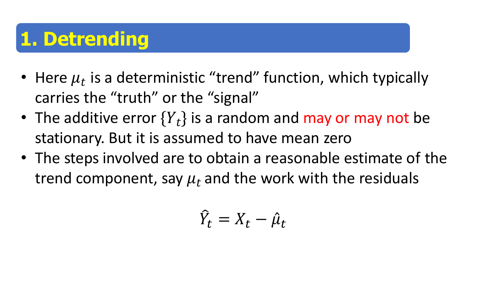
\(\mu_t\) เป็น deterministic “trend” function ซึ่งมักเป็น “truth” หรือ “signal” ส่วน error \(\{Y_t\}\) เป็นส่วนสุ่มที่ may or may not be stationary แต่สมมติว่ามีค่าเฉลี่ยศูนย์ ขั้นตอนคือหาค่าประมาณที่สมเหตุสมผลของ trend เขียนว่า \(\hat\mu_t\) แล้วทำงานกับ residuals \(\hat Y_t=X_t-\hat\mu_t\) จุดที่ต้องสังเกตคือ การลบ trend ออกไม่ได้รับประกันว่า residual จะ stationary ต้องตรวจอีกครั้ง
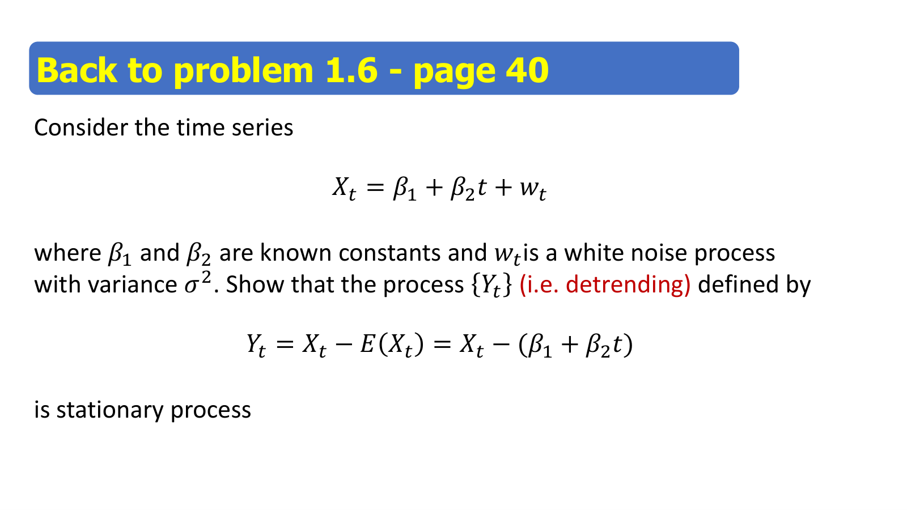
โจทย์ให้แสดงว่า process \(Y_t\) (i.e. detrending) ที่นิยามว่า \(Y_t=X_t-E(X_t)=X_t-(\beta_1+\beta_2t)\) เป็น stationary process
\(Y_t=(\beta_1+\beta_2t+w_t)-(\beta_1+\beta_2t)\)
\(Y_t=w_t\)
\(E(Y_t)=0\) ไม่ขึ้นกับ t
\(\gamma(h)=\sigma^2\) เมื่อ \(h=0\) และ 0 เมื่อ \(h\ne0\) ขึ้นกับ h เท่านั้น
ในโจทย์นี้รู้ค่า \(\beta_1\) และ \(\beta_2\) จริง เมื่อลบ trend ออกจึงเหลือ white noise พอดี ในข้อมูลจริงต้องประมาณ \(\beta\) และ noise ก็ไม่จำเป็นต้องเป็น white noise ตามตัวอย่างในหัวข้อ 8
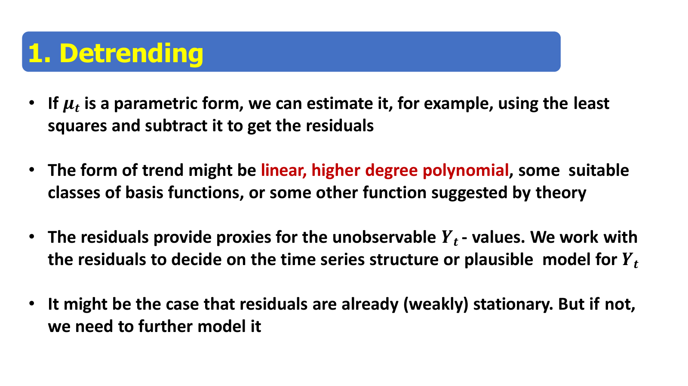
ถ้า \(\mu_t\) มีรูปแบบที่เป็นพารามิเตอร์ ประมาณได้ เช่น ด้วย least squares แล้วลบออกเพื่อได้ residuals รูปแบบของ trend อาจเป็น linear, higher degree polynomial หรือ basis functions ที่เหมาะสม หรือฟังก์ชันอื่นตามทฤษฎี Residuals เป็นตัวแทนของค่า \(Y_t\) ที่สังเกตไม่ได้ จึงใช้ residuals ตัดสินโครงสร้างหรือโมเดลของ \(Y_t\) residuals อาจ weakly stationary อยู่แล้ว ถ้ายังไม่ ต้องสร้างโมเดลต่อ
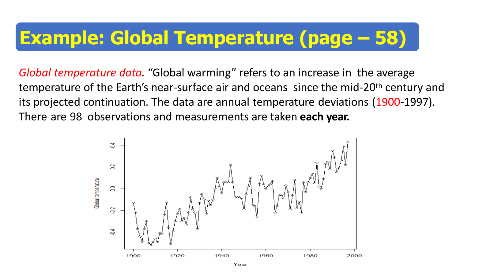
Global temperature data “Global warming” หมายถึงการเพิ่มขึ้นของอุณหภูมิเฉลี่ยของอากาศใกล้ผิวโลกและมหาสมุทรตั้งแต่กลางศตวรรษที่ 20 ข้อมูลเป็น annual temperature deviations ตั้งแต่ 1900 ถึง 1997 มี 98 ค่า วัดปีละครั้ง ค่าเริ่มที่ประมาณ −0.2 ถึง −0.5 ในทศวรรษ 1900 และเพิ่มถึงประมาณ 0.4 ในปลายทศวรรษ 1990
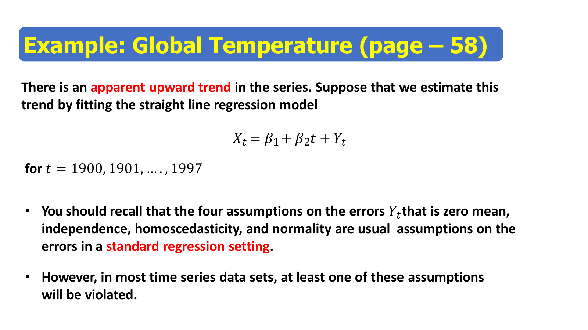
ข้อมูลมี apparent upward trend จึงประมาณ trend ด้วยการ fit straight line regression model \(X_t=\beta_1+\beta_2t+Y_t\) สำหรับ \(t=1900,1901,\dots,1997\) สไลด์ทวนสมมติฐานสี่ข้อของ error ใน standard regression setting คือ zero mean, independence, homoscedasticity และ normality แต่ในข้อมูล time series ส่วนใหญ่ อย่างน้อยหนึ่งข้อจะไม่เป็นจริง ข้อที่ไม่เป็นจริงบ่อยที่สุดคือ independence เพราะข้อมูล time series มี autocorrelation
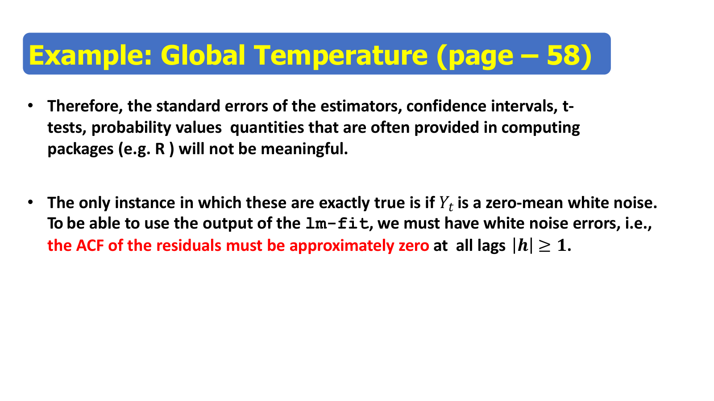
ผลคือ standard errors ของตัวประมาณ, confidence intervals, t-tests และ probability values ที่โปรแกรมเช่น R ให้มา จะไม่มีความหมาย ค่าเหล่านี้ถูกต้องเฉพาะเมื่อ \(Y_t\) เป็น zero-mean white noise ดังนั้นเพื่อให้ใช้ผลของ lm-fit ได้ ต้องมี white noise errors คือ the ACF of the residuals must be approximately zero ที่ทุก lag \(|h|\ge1\) ค่าประมาณของเส้นตรงเองยังใช้เป็น trend ได้ สิ่งที่เชื่อไม่ได้คือค่าที่บอกความแม่นของค่าประมาณ
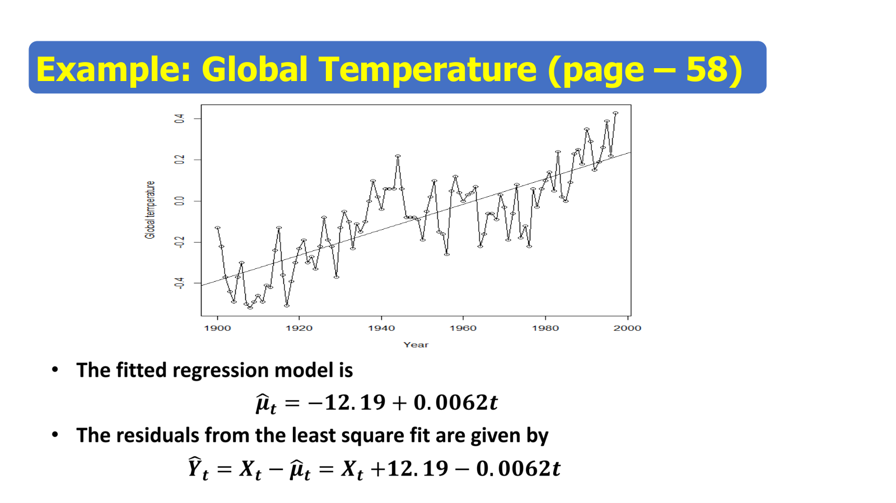
เส้นตรงที่ fit ได้คือ \(\hat\mu_t=-12.19+0.0062t\) เส้นนี้ผ่านกลางกลุ่มจุดจากประมาณ −0.4 ในปี 1900 ถึงประมาณ 0.2 ในปี 1997 จุดจริงหลายช่วงอยู่เหนือเส้นติดกันยาว เช่น ปี 1937 ถึง 1945 และอยู่ใต้เส้นติดกันยาว เช่น ปี 1904 ถึง 1912 เป็นสัญญาณแรกว่า residual จะยังมี autocorrelation
0.0062 หมายถึงอุณหภูมิเฉลี่ยเพิ่ม 0.0062 องศาต่อปี หรือ 0.62 องศาต่อ 100 ปี
\(-12.19+0.0062(1900)=-12.19+11.78=-0.41\)
\(-12.19+0.0062(1997)=-12.19+12.38=0.19\)
\(\hat Y_t=X_t-\hat\mu_t\) เช่น ปี 1997 ที่ \(X_t=0.43\) ได้ \(0.43-0.19=0.24\)
ค่าคงที่ −12.19 ดูผิดปกติเพราะ t เป็นเลขปีจริง ไม่ใช่ 1, 2, 3 ค่านี้คือค่าของเส้นที่ปี 0 ซึ่งไม่มีความหมายเชิงอุณหภูมิ
Residual แกว่งระหว่างประมาณ −0.3 ถึง 0.33 รอบ 0 ตลอด 98 ปี trend หายไป สไลด์ระบุว่าดู stationary มากกว่าข้อมูลเดิม แต่เตือนว่าค่อนข้างแน่ใจได้ว่า residuals ไม่ใช่ white noise ค่าเกาะกลุ่มเป็นช่วงยาว เช่น ประมาณปีที่ 1 ถึง 15 ส่วนใหญ่ติดลบระหว่าง −0.1 ถึง −0.2 และปีที่ 38 ถึง 48 ส่วนใหญ่เป็นบวกระหว่าง 0.1 ถึง 0.33 ค่าที่อยู่ติดกันไปทางเดียวกัน จึงยังมี autocorrelation
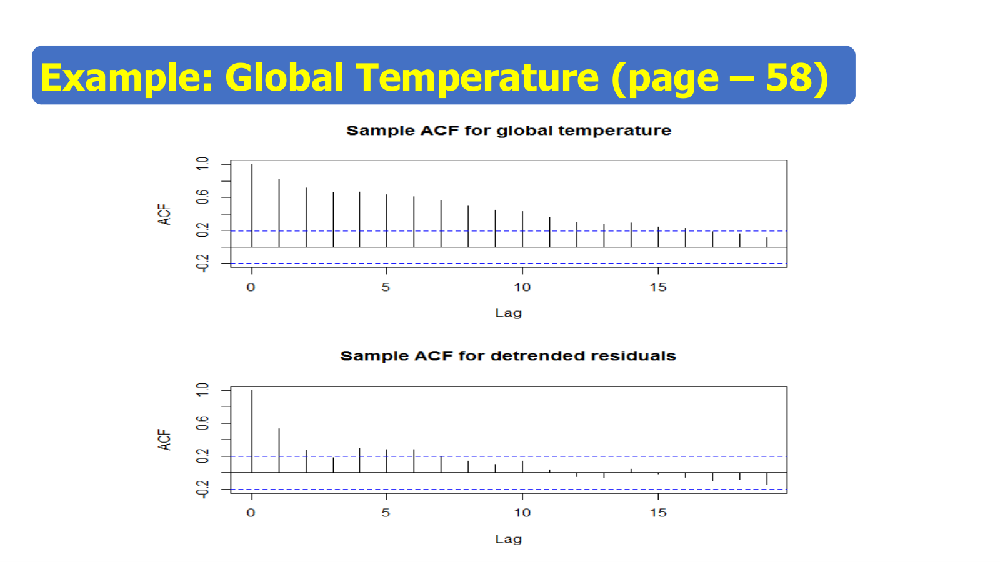
ACF ของข้อมูลเดิมมีค่าประมาณ 0.82 ที่ lag 1 และเกินขอบ 0.2 จนถึงประมาณ lag 16 ส่วน ACF ของ residuals หลัง detrending มีค่าประมาณ 0.54 ที่ lag 1, 0.28 ที่ lag 2, 0.3 ที่ lag 4, 0.28 ที่ lag 6 และเข้าขอบตั้งแต่ประมาณ lag 7 การ detrend ทำให้ค่าที่ lag 1 ลดจาก 0.82 เหลือ 0.54 และ lag สุดท้ายที่เกินขอบลดจากประมาณ 16 เหลือประมาณ 6 แต่ค่าที่ lag 1 ยังเกินขอบชัดเจน เงื่อนไขที่ ACF ของ residuals ต้องประมาณศูนย์ที่ทุก lag จึงไม่ผ่าน standard error และ p-value ของ lm() ยังเชื่อถือไม่ได้ และ detrending อย่างเดียวไม่เพียงพอสำหรับข้อมูลชุดนี้
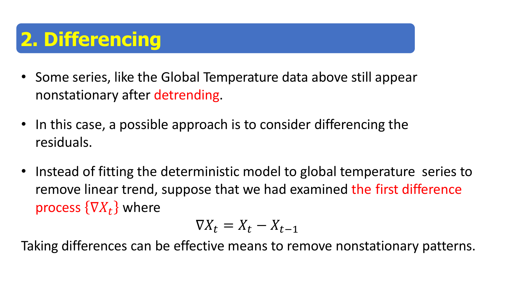
ข้อมูลบางชุด เช่น global temperature ยังดูไม่ stationary หลัง detrending แนวทางที่เป็นไปได้คือ differencing แทนที่จะ fit deterministic model เพื่อกำจัด linear trend ให้พิจารณา the first difference process ∇X_t โดย \(\nabla X_t=X_t-X_{t-1}\) การหาผลต่างเป็นวิธีที่ได้ผลในการกำจัดรูปแบบที่ไม่ stationary
| \(X_t\) | 12 | 14 | 17 | 18 | 21 | 23 |
|---|---|---|---|---|---|---|
| \(\nabla X_t\) | 2 | 3 | 1 | 3 | 2 |
ข้อมูลเดิมเพิ่มขึ้นต่อเนื่อง ผลต่างคือ 2, 3, 1, 3, 2 ซึ่งแกว่งรอบ 2.2 และไม่เพิ่มขึ้น ข้อมูล 6 จุดเหลือ 5 จุด Differencing เปลี่ยนระดับของข้อมูลเป็นขนาดของการเปลี่ยนแปลง trend เส้นตรงจึงกลายเป็นค่าคงที่ซึ่งเท่ากับความชัน
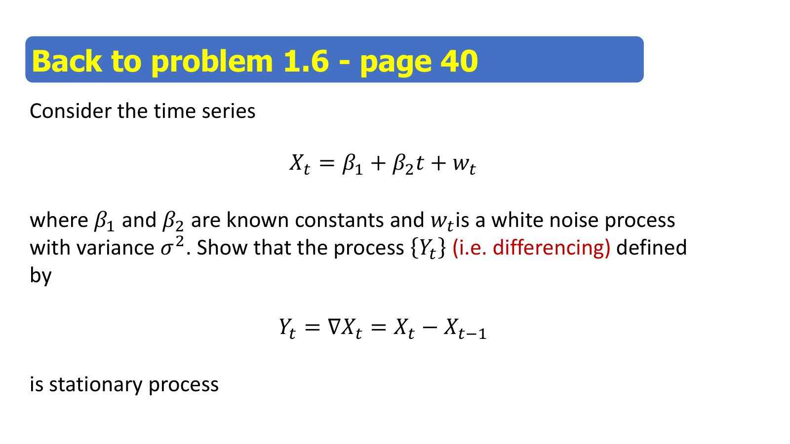
โจทย์ให้แสดงว่า process \(Y_t\) (i.e. differencing) ที่นิยามว่า \(Y_t=\nabla X_t=X_t-X_{t-1}\) เป็น stationary process โดย \(X_t=\beta_1+\beta_2t+w_t\)
\(Y_t=(\beta_1+\beta_2t+w_t)-(\beta_1+\beta_2(t-1)+w_{t-1})\)
\(\beta_1-\beta_1=0\) และ \(\beta_2t-\beta_2t+\beta_2=\beta_2\) จึงได้ \(Y_t=\beta_2+w_t-w_{t-1}\)
\(E(Y_t)=\beta_2\) ไม่ขึ้นกับ t
\(\gamma(0)=\mathrm{Var}(w_t)+\mathrm{Var}(w_{t-1})=2\sigma^2\)
\(Y_{t+1}=\beta_2+w_{t+1}-w_t\) และ \(Y_t=\beta_2+w_t-w_{t-1}\) ตัวที่ตรงกันคือ \(w_t\) มีสัมประสิทธิ์ −1 และ +1: \(\gamma(1)=-\sigma^2\)
ไม่มี w ที่ตรงกัน: \(\gamma(h)=0\)
เมื่อเทียบกับ detrending ซึ่งเหลือ white noise การ differencing กำจัด trend ได้เช่นกัน แต่สร้าง correlation ที่ lag 1 เท่ากับ −0.5 ขึ้นมา เพราะผลต่างที่ติดกันใช้ \(w_t\) ร่วมกันด้วยเครื่องหมายตรงข้าม ผลที่ได้มีรูปของ MA(1) ใน Lesson 5 โดย \(\theta=-1\)
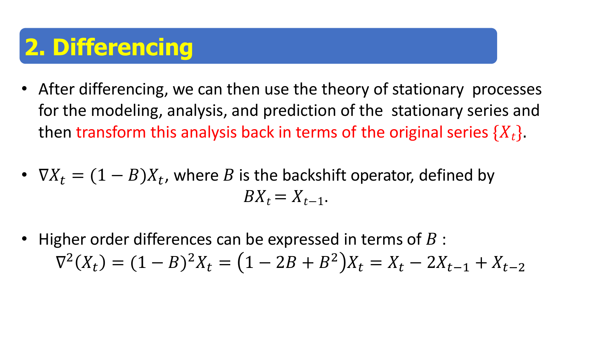
หลัง differencing ใช้ทฤษฎีของ stationary processes สร้างโมเดล วิเคราะห์ และพยากรณ์ series ที่ stationary แล้ว transform this analysis back in terms of the original series {X_t} เช่น ถ้าพยากรณ์ผลต่างถัดไปได้ 2 และค่าล่าสุดคือ 23 ค่าพยากรณ์ของ series เดิมคือ \(23+2=25\) สไลด์แนะนำ backshift operator B ซึ่งนิยามว่า \(BX_t=X_{t-1}\) จึงเขียนได้ว่า \(\nabla X_t=(1-B)X_t\) และผลต่างอันดับสูงเขียนด้วย B ได้: \(\nabla^2X_t=(1-B)^2X_t=(1-2B+B^2)X_t=X_t-2X_{t-1}+X_{t-2}\)
\((1-B)^2=1-2B+B^2\)
\(B^2X_t=B(BX_t)=BX_{t-1}=X_{t-2}\) คือถอยสองช่วงเวลา
\(X_t-2X_{t-1}+X_{t-2}\)
ตรวจกับตัวอย่างข้างบนที่ \(t=4\): \(\nabla^2X_4=\nabla X_4-\nabla X_3=1-3=-2\) และ \(18-2(17)+14=-2\) ตรงกัน
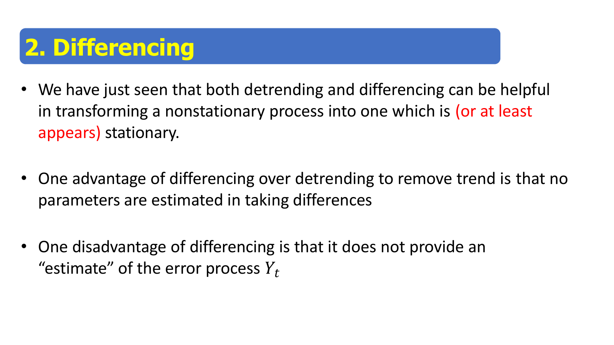
ทั้ง detrending และ differencing ช่วยแปลง nonstationary process ให้เป็น process ที่ stationary (or at least appears) ข้อดีของ differencing เหนือ detrending คือ ไม่ต้องประมาณพารามิเตอร์ใดในการหาผลต่าง ข้อเสียของ differencing คือ ไม่ให้ “estimate” ของ error process \(Y_t\)
| Detrending | Differencing | |
|---|---|---|
| ต้องประมาณพารามิเตอร์ | ต้อง เช่น \(\beta_1,\beta_2\) | ไม่ต้อง |
| ให้ค่าประมาณของ \(Y_t\) | ให้ คือ residuals | ไม่ให้ |
| ให้ค่าประมาณของ trend | ให้ คือ \(\hat\mu_t\) | ไม่ให้ |
| จำนวนข้อมูลหลังทำ | เท่าเดิม | ลดลงครั้งละหนึ่งจุด |
| ผลกับ problem 1.6 | white noise | \(\beta_2+w_t-w_{t-1}\) มี \(\rho(1)=-0.5\) |
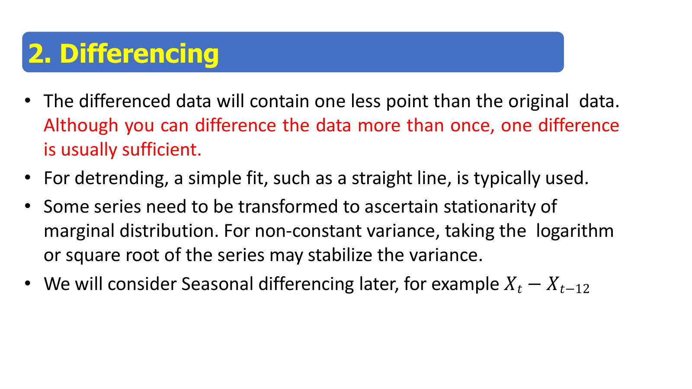
ข้อมูลหลัง differencing มีจุดน้อยกว่าข้อมูลเดิมหนึ่งจุด สไลด์เน้นว่า Although you can difference the data more than once, one difference is usually sufficient. สำหรับ detrending มักใช้ simple fit เช่น เส้นตรง ข้อมูลบางชุดต้องแปลงก่อนเพื่อให้การแจกแจง stationary: เมื่อ variance ไม่คงที่ การใช้ logarithm หรือ square root อาจทำให้ variance คงที่ และ seasonal differencing เช่น \(X_t-X_{t-12}\) จะพิจารณาภายหลัง เรื่องการแปลงข้อมูลอยู่ใน Lesson 7
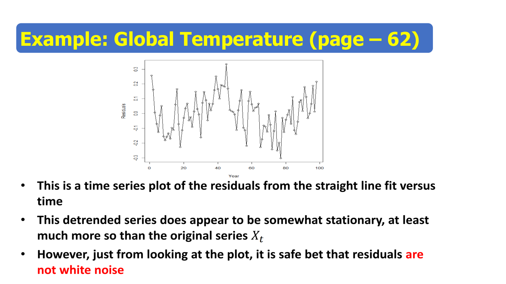
หน้าสุดท้ายนำกราฟ residuals หลัง detrending กลับมาอีกครั้งเพื่อปิดเรื่อง residuals ยังเกาะกลุ่มเป็นช่วงยาว เช่น ปีที่ 38 ถึง 48 เป็นบวก และปีที่ 70 ถึง 80 ติดลบถึงประมาณ −0.3 ค่าที่อยู่ติดกันไปทางเดียวกัน จึงไม่ใช่ white noise ในตำราหน้า 62 เทียบกับ first difference ของข้อมูลเดียวกัน ซึ่ง ACF เข้าขอบเร็วกว่า เป็นเหตุผลที่ differencing เหมาะกับ global temperature ข้อความเรื่องตำราหน้า 62 นี้มาจากบทเรียนฉบับก่อนซึ่งอ้างตำรา สไลด์หน้านี้แสดงเฉพาะกราฟ residuals
newtemp ให้เหลือเฉพาะปี 1900 เป็นต้นไปข้อต่อไปนี้ให้เขียนคำตอบเองก่อน แล้วจึงเปิดเฉลย
\(\bar X=20/5=4\) ค่าที่ลบค่าเฉลี่ยแล้วคือ −2, 0, 2, 0, 0
\(\hat\gamma(0)=(4+0+4+0+0)/5=1.6\)
ผลคูณของคู่ที่ติดกัน: \((-2)(0)+(0)(2)+(2)(0)+(0)(0)=0\) จึงได้ \(\hat\gamma(1)=0/5=0\)
\(\hat\rho(1)=0/1.6=0\)
(ก) \(E(X_t)=\beta_1+\beta_2t\) ขึ้นกับ t จึงไม่ stationary
(ข) \(Y_t=w_t\) มี mean 0 และ \(\gamma(h)\) เท่ากับ \(\sigma^2\) เมื่อ \(h=0\) และ 0 เมื่อ \(h\ne0\) จึง stationary
(ค) \(\nabla X_t=\beta_2+w_t-w_{t-1}\) มี mean \(\beta_2\), \(\gamma(0)=2\sigma^2\), \(\gamma(\pm1)=-\sigma^2\) และ 0 เมื่อ \(|h|\ge2\) ไม่ขึ้นกับ t จึง stationary
\(\hat\mu_{1950}=-12.19+0.0062(1950)=-12.19+12.09=-0.10\)
Residual \(=-0.15-(-0.10)=-0.05\)
0.0062 คือความชัน อุณหภูมิเฉลี่ยเพิ่ม 0.0062 องศาต่อปี
lm() จึงใช้ไม่ได้กับการ fit trend ของ time series และเงื่อนไขใดที่ทำให้ใช้ได้Regression สมมติว่า error มี zero mean, independence, homoscedasticity และ normality ในข้อมูล time series อย่างน้อยหนึ่งข้อมักไม่เป็นจริง โดยเฉพาะ independence
ค่า standard errors, confidence intervals, t-tests และ p-values จึงไม่มีความหมาย
ใช้ได้เมื่อ \(Y_t\) เป็น zero-mean white noise คือ ACF ของ residuals ประมาณศูนย์ที่ทุก lag \(|h|\ge1\)
บทถัดไป: Lesson 4 — Smoothing methods
| หน้า | เนื้อหา | สอนที่ |
|---|---|---|
| 1 | ปก Estimating means and covariances | etc — ปก |
| 2–3 | Estimation from data | หัวข้อ 1 |
| 4–6 | ตัวประมาณ mean, covariance, correlation | หัวข้อ 2 |
| 7–9 | Correlogram และ large sample distribution | หัวข้อ 3 |
| 10 | In-class example | หัวข้อ 4 |
| 11–16 | R-Example white noise, global temperature, ADF test | หัวข้อ 5 |
| 17 | หน้าคั่น Dealing with Deterministic Trend | etc — หน้าคั่น |
| 18–21 | Systematic pattern, problem 1.6, EDA, 2 ways | หัวข้อ 6 |
| 22–25 | Detrending | หัวข้อ 7 |
| 26–31 | Example: Global temperature | หัวข้อ 8 |
| 32–37 | Differencing | หัวข้อ 9 |